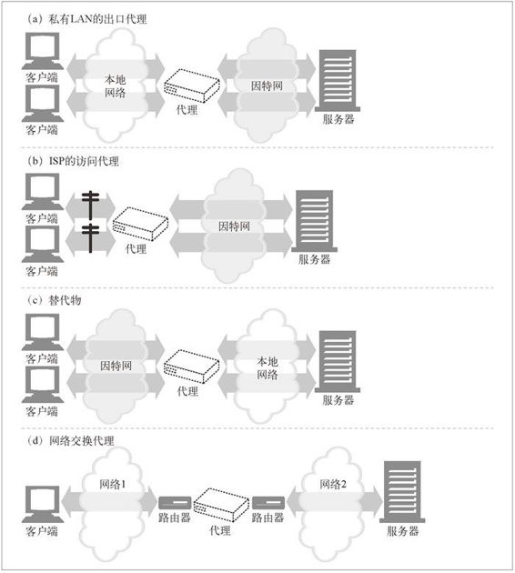
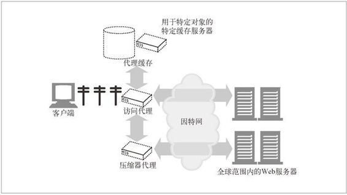
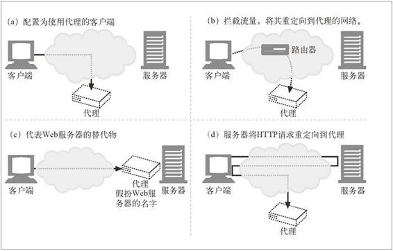

6.3 代理会去往何处
前一小节解释了代理会做些什么。现在我们来看看在一个网络结构中部署代理的时候，它会位于何处。本节会涵盖以下内容：
怎样将代理部署到网络中去；
怎样将代理以层级方式连接在一起；
怎样先将网络流量直接导入代理服务器中。
6.3.1 代理服务器的部署
可以根据其目标用途，将代理放在任意位置。图 6-11 给出了部署代理服务器的几种方式。

图 6-11 可以根据其目标用途，以多种方式来部署代理
出口代理
可以将代理固定在本地网络的出口点，以便控制本地网络与大型因特网之间的流量。可以在公司网络中使用出口代理（参见图 6-11a），提供针对公司外部恶意黑客的防火墙保护，或降低带宽费用，提高因特网流量的性能。小学可能会使用过滤出口代理来防止早熟的学生浏览不恰当的内容。
访问（入口）代理
代理常被放在 ISP 访问点上，用以处理来自客户的聚合请求。ISP 使用缓存代理来存储常用文档的副本，以提高用户（尤其是高速连接用户）的下载速度，降低因特网带宽耗费（参见图 6-11b）。
反向代理
代理通常会被部署在网络边缘，在 Web 服务器之前，作为替代物（也常被称为反向代理，参见图 6-11c）使用，在那里它们可以处理所有传送给 Web 服务器的请求，并只在必要时向 Web 服务器请求资源。替代物可以提高 Web 服务器的安全特性，或者将快速的 Web 服务器缓存放在较慢的服务器之前，以提高性能。反向代理通常会直接冒用 Web 服务器的名字和 IP 地址，这样所有的请求就会被发送给代理而不是服务器了。
网络交换代理
可以将具有足够处理能力的代理放在网络之间的因特网对等交换点上，通过缓存来减轻因特网节点的拥塞，并对流量进行监视，参见图 6-11d。1
1 核心代理通常被部署在因特网带宽很昂贵的地方（尤其是在欧洲）。有些国家（比如英国）还会出于对国家安全的考虑，对有争议的代理部署进行评估，以监测因特网流量。
6.3.2 代理的层次结构
可以通过代理层次结构（proxy hierarchy）将代理级联起来。如图 6-12 所示，在代理的层次结构中，会将报文从一个代理传给另一个代理，直到最终抵达原始服务器为止（然后通过代理传回给客户端）。
图 6-12 三级的代理层次结构
Proxy 层次结构中的代理服务器被赋予了父（parent）和子（child）的关系。下一个入口（inbound）代理（靠近服务器）被称为父代理，下一个出口（outbound）代理（靠近客户端）被称为子代理。在图 6-12 中，代理 1 是代理 2 的子代理。同样，代理 2 是代理 3 的子代理，代理 3 是代理 2 的父代理。
代理层次结构的内容路由
图 6-12 中的代理层次结构是静态的——代理 1 总是会将报文转发给代理 2，代理 2 总是会将报文转发给代理 3。但是，层次不一定非得是静态的。代理服务器可以根据众多因素，将报文转发给一个不断变化的代理服务器和原始服务器集。
比如，在图 6-13 中，访问代理会根据不同的情况将报文转发给父代理或原始服务器。
如果所请求的对象属于一个付费使用内容分发服务的 Web 服务器，代理就会将请求发送给附近的一个缓存服务器，这个服务器会返回已缓存对象，或者如果它那儿没有的话，它会去取回内容。
如果请求的是特定类型的图片，访问代理会将请求转发给一个特定的压缩代理，这个代理会去获取图片，然后对其进行压缩，这样通过到客户端的慢速 Modem 下载时，速度会更快一些。

图 6-13 代理层次结构可以是动态的，随请求而变的
这里还有几个动态选择父代理的例子。
负载均衡
子代理可能会根据当前父代理上的工作负载级别来决定如何选择一个父代理，以均衡负载。
地理位置附近的路由
子代理可能会选择负责原始服务器所在物理区域的父代理。
协议 / 类型路由
子代理可能会根据 URI 将报文转发到不同的父代理和原始服务器上去。某些特定类型的 URI 可能要通过一些特殊的代理服务器转发请求，以便进行特殊的协议处理。
基于订购的路由
如果发布者为高性能服务额外付费了，它们的 URI 就会被转发到大型缓存或压缩引擎上去，以提高性能。
在不同的产品中，动态父路由逻辑的实现方式各有不同，包括使用配置文件、脚本语言和动态可执行插件等。
6.3.3 代理是如何获取流量的
客户端通常会直接与 Web 服务器进行通信，所以我们要解释清楚 HTTP 流量怎样才能首先流向代理。有四种常见方式可以使客户端流量流向代理。

图 6-14 有很多技巧可以将 Web 请求导向代理
修改客户端
很多 Web 客户端，包括网景和微软的浏览器，都支持手工和自动的代理配置。如果将客户端配置为使用代理服务器，客户端就会将 HTTP 请求有意地直接发送给代理，而不是原始服务器（参见图 6-14a）。
修改网络
网络基础设施可以通过若干种技术手段，在客户端不知道，或没有参与的情况下，拦截网络流量并将其导入代理。这种拦截通常都依赖于监视 HTTP 流量的交换设备及路由设备，在客户端毫不知情的情况下，对其进行拦截，并将流量导入一个代理（参见图 6-14b）。这种代理被称为拦截（intercepting）代理。2
2 拦截代理通常被称为“透明代理”，因为你会在不知情的情况下连接到这些代理上去。但 HTTP 规范中已用“透明”来表示那些不会对语义进行修改的功能了，所以标准制定机构建议在流量捕获中使用术语“拦截”。这里采纳了这一术语。
修改 DNS 的命名空间
放在 Web 服务器之前的代理服务器——替代物，会直接假扮 Web 服务器的名字和 IP 地址，这样，所有的请求就会发送给这些替代物，而不是服务器了（参见图 6-14c）。要实现这一点，可以手工编辑 DNS 名称列表，或者用特殊的动态 DNS 服务器根据需要来确定适当的代理或服务器。有时在安装过程中，真实服务器的 IP 地址和名称被修改了，替代物得到的会是之前的地址和名称。
修改 Web 服务器
也可以将某些 Web 服务器配置为向客户端发送一条 HTTP 重定向命令（响应码 305），将客户端请求重定向到一个代理上去。收到重定向命令后，客户端会与代理进行通信（参见图 6-14d）。
下一节解释了如何配置客户端才能使其将流量发送给代理。第 20 章会说明如何配置网络、DNS 以及服务器，才能将流量重定向到代理服务器。